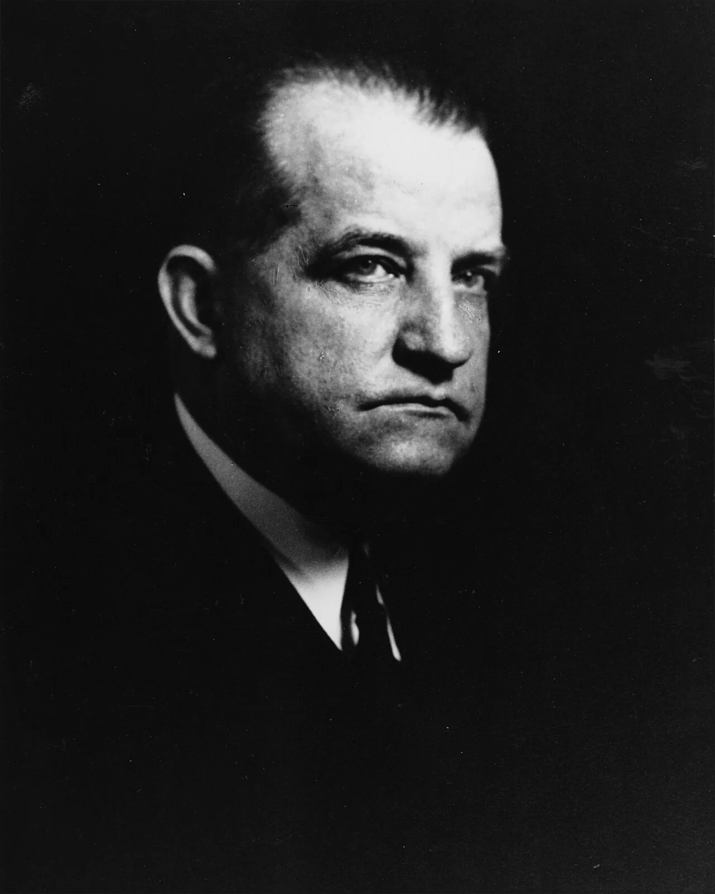
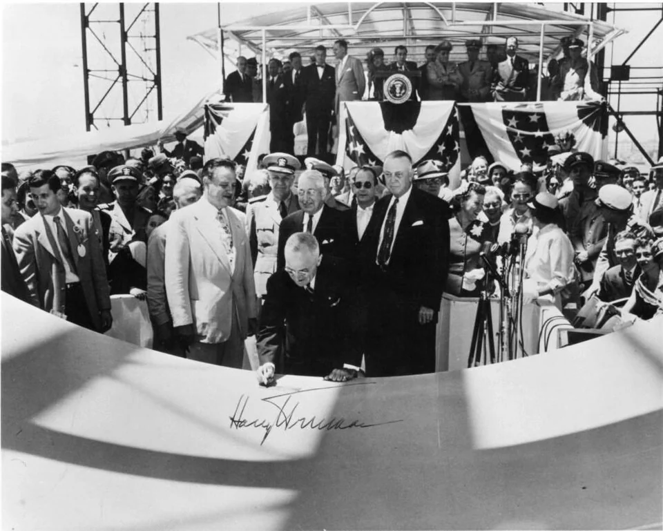
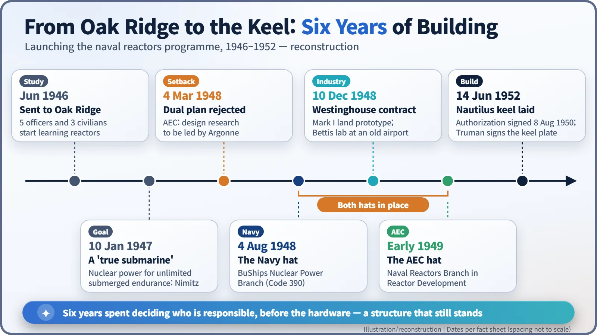

Nuclear History · 152
Two Hats, One Desk — How the Naval Reactors Program Was Born (1946–1952)
The law gave the atom to a civilian commission, so the Navy put one officer in both agencies at once.
The 1946 Atomic Energy Act gave a new civilian agency control of everything atomic, so the US Navy could not build a reactor on its own. Between 1946 and 1952 it found a way round: a single officer, Hyman G. Rickover, headed a nuclear branch in the Navy's Bureau of Ships and a naval reactors branch in the Atomic Energy Commission at the same time. That "two hats" arrangement tied together Westinghouse's Bettis laboratory, General Electric's Knolls laboratory, an Idaho test site and the Electric Boat shipyard, and it still shapes the program today.
A letter and its answer from the same pen
Washington, 1949. In a cramped temporary office on the fourth floor at the back of the Main Navy Building, a captain drafts a letter for the Atomic Energy Commission's director of reactor development, asking the Navy to take some action. Then he drafts a second document: the Navy's approval of that very request. The scene is a reconstruction, but the method is real; the official history of the nuclear navy describes exactly this way of working. The captain was Hyman G. Rickover (1900–1986), and he could do it because he held a job in each of the two agencies at once. The US Naval Reactors program grew out of that odd arrangement. [1]
![Organization chart: on the left the Navy line from the Secretary of the Navy through the Chief of the Bureau of Ships, Admiral Mills, and the research division to the Nuclear Power Branch, Code 390, created 4 August 1948; on the right the Atomic Energy Commission line from the commissioners through the general manager and the Reactor Development Division under Hafstad to the Naval Reactors Branch of early 1949; both branches connect to a central box for Captain Rickover, who heads both, and from him lines run to Argonne Laboratory, Westinghouse Bettis with the water-cooled Mark I, GE Knolls with the sodium-cooled Mark A, the Idaho test site and Electric Boat in Groton](../../assets/images/history/152-naval-reactors-program/fig1-dual-hat-org.webp)
The Navy could not have a reactor on its own
The story starts in June 1946, when the Navy's Bureau of Ships sent five officers and three civilian engineers to the Clinton Laboratories at Oak Ridge, Tennessee, to learn reactor technology from the ground up. A month later the Atomic Energy Act was signed, and it changed the rules: every part of atomic energy now belonged to a new civilian agency, the Atomic Energy Commission (AEC). In the words of the official history, the act "obliterated" any hope that the Navy could set up its own Manhattan-style project. [1]
The Navy knew what it wanted. On 10 January 1947, Admiral Chester W. Nimitz, the Chief of Naval Operations, approved submarine officers' recommendations that included developing nuclear power plants to give "unlimited submerged endurance." A diesel boat needs air to run its engines, so it must keep coming up. A reactor makes heat without oxygen, which made a "true submarine" possible.
A proposal for a dual organization, and a polite no
The AEC, barely a year old, was busy with weapons production and basic research. On 20 January 1948, Vice Admiral Earle W. Mills, Chief of the Bureau of Ships, sent the Commission a proposal drafted by Rickover and a young officer, Louis H. Roddis Jr. Its premise: "the problems to be solved are so intimately connected with both the Atomic Energy Commission and the Navy that neither activity can make separate engineering decisions regarding them." So a single organization should act for both.
The answer was no. At a meeting on 4 March 1948, the Commission's representatives ruled out a dual organization and said that design research would be led by Argonne National Laboratory.
The Navy did not give up. A letter that Rickover drafted and Mills signed on 2 August 1948 told the AEC there was "no reasonable hope" its methods would produce a nuclear submarine in time, and warned that the Navy might go straight to industry. [1]

One hat, then the other
Two days later, on 4 August 1948, Mills created a Nuclear Power Branch (Code 390) inside the bureau's research division and put Rickover in charge. That was the first hat. On 10 December 1948, the AEC signed a letter contract with Westinghouse to design and build a land-based prototype plant, the Mark I, "within the shortest practicable time." Westinghouse set up its laboratory at Bettis Field, an old Pittsburgh airport, using the hangars as offices.
The second hat came from the AEC side. On 16 January 1949, the physicist Lawrence R. Hafstad was named director of a new Division of Reactor Development, and inside it a Naval Reactors Branch took shape, again with Rickover at its head. This is why some sources date the organization to 1948 and others to 1949: the first date counts from the Navy side, the second from the AEC side. A Navy history article puts Rickover's AEC assignment in February 1949. [2]
According to the official history, the double role gave Rickover access to information in both agencies, let him assemble people and resources that neither would have provided alone, and let him move first when both hesitated. The letter-and-reply routine was the result. The same history adds that getting the signatures "was never automatic" and often took weeks of persuasion. [1]
Two labs, one test site, one shipyard
Rickover ran two reactor designs in parallel. Westinghouse at Bettis developed the water-cooled Mark I; General Electric's Knolls Atomic Power Laboratory in Schenectady, New York, developed the sodium-cooled Mark A. The Mark I prototype would be built at the AEC's National Reactor Testing Station in the Idaho desert. The submarine itself went to Electric Boat in Groton, Connecticut, a yard so short of work after the war that it had been building highway bridges.
On 8 August 1950, President Harry S. Truman signed the authorization act covering the Navy's fiscal year 1952 shipbuilding programme, which included the nuclear submarine. On 25 October 1951, the ship got her name: Nautilus. [1]


The two-hat structure is still there
On 14 June 1952, Truman signed his name on the keel plate of Nautilus. The official history records the scene: the Secretary of the Navy surrounded by admirals, and "in the background and in civilian clothes was Rickover." [1]
The structure outlived him. Executive Order 12344, effective 1 February 1982, says the Naval Nuclear Propulsion Program is carried out by two organizational units, one in the Department of Energy and one in the Navy, and that "both organizational units shall be headed by the same individual," for a term of eight years. Today that director also serves as a deputy administrator of the National Nuclear Security Administration. [3]
New technology is not born only in laboratories. It also needs someone to decide who answers for it, all the way through. Rickover's two hats were one answer to that question.